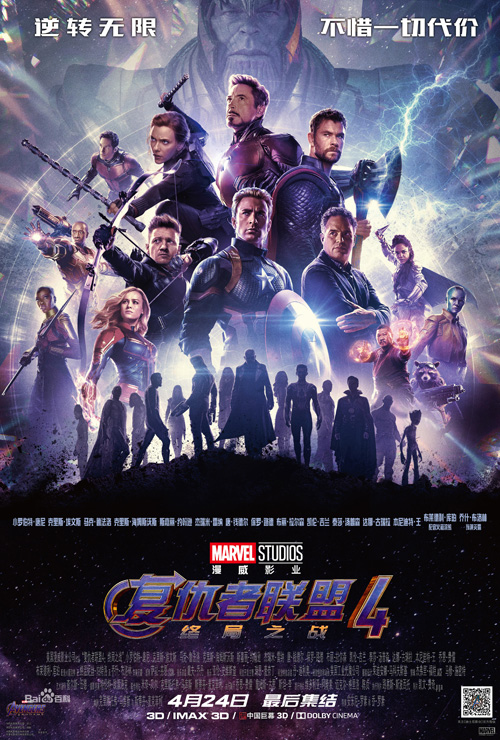

复仇者联盟4迅雷下载_复仇者联盟4高清下载,
电影复仇者联盟41080p下载
◎导演执导: 安东尼·罗素 / 乔·罗素
◎影视编剧: 杰克·科比 / 克里斯托弗·马库斯 / 斯蒂芬·麦克菲利 / 吉姆·斯特林
◎主演演员: 乔什·布洛林 / 布丽·拉尔森 / 小罗伯特·唐尼 / 克里斯·海姆斯沃斯 / 克里斯·埃文斯 / ....
◎电影类型: 动作 / 科幻
◎国家: 美国
◎对白语言: 英语
◎电影上映时间: 2019-05-03(美国)
◎其它译名: 复仇者联盟3：无尽之战(下) / 复联4 / Avengers: Infinity War - Part II / The Avengers 3: Part 2
◎链接imdb编码: tt4154796
电影《复仇者联盟4》（Untitled Avengers film）是未上映的美国超级英雄电影，改编自漫威漫画，也是漫威电影宇宙第22部影片。由安东尼·罗素和乔·罗素执导，小罗伯特·唐尼、克里斯·海姆斯沃斯、马克·鲁法洛、克里斯·埃文斯、汤姆·赫兰德、布丽·拉尔森、汤姆·希德勒斯顿、乔什·布洛林等主演。预计2019年5月3日在美国上映。
《复仇者联盟4》暂未公布的副标题，会吓到粉丝们！2018-05-07 13:05
《湮灭》和《秘密入侵》都是秘战的先导事件，我们不能把《复联4》单单看作上一阶段的收官，更是下一阶段的开始。在未来的故事发展中，复仇者们也许会展开许多新的冒险故事，并且把地球放在了一个更加宏大的宇宙空间之中。...详情
影片导演罗素兄弟在宣传《美国队长3》时，向外媒透露，《复仇者联盟3》将改名，而且将是两部不同的电影。
“这是一个误会，《复仇者联盟3》上和下将是两部完全不同的电影。”乔·罗素在接受Uproxx采访时说，“我们肯定会改名，但目前还没想到很好的副标题，‘无限战争’是个误导。”乔·罗素也同时向媒体表示，一旦想到对的片名，就会即时公布。看来，在内容上，《复联3》上下两部将更像是《复仇者联盟3》与《复仇者联盟4》。不知最终这两部影片的副标题是否会有一部保留“无限战争”，但值得庆幸的是，将有两部不同的《复联》电影与影迷见面，这显然比一部强拆为两部分的圈钱之作要有诚意的多。
外媒报道称，《复仇者联盟3：无限战争》将不再拆分为上下集，《复仇者联盟3：无限战争（下）》将会改名，现在这部片子被称为“未定名复仇者联盟”(Untitled Avengers)。
该消息于美国当地时间周五曝出，迪士尼影业、漫威影业以及影片导演罗素兄弟都尚未对此发表回应。消息还进一步称，《复仇者联盟3：无限战争（上）》的上映时间依旧为2018年5月4日，不过片名会调整为《复仇者联盟3：无限战争》。而“未定名复仇者联盟”也会如期于2019年5月3日上映。 [2]
2017年4月，凯文·费奇接受《好莱坞报道者》的采访时透露蜘蛛侠将加盟《复仇者联盟4》。 [3] 2016年7月后《复仇者联盟3：无限战争》将不再拆分为上下集，《复仇者联盟3：无限战争（下）》将会改名，现在这部片子被称为“未定名复仇者联盟”(Untitled Avengers)。也就是说，“未定名复仇者联盟”等同于“复仇者联盟4”。